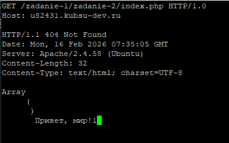
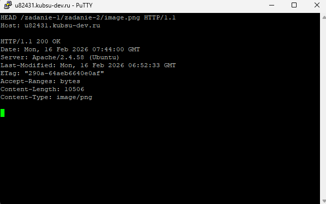
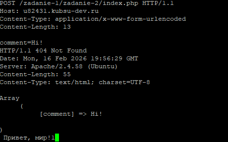

Лабораторная работа 2
1. GET /index.php (HTTP/1.0)

2. GET /index.php (HTTP/1.1)

3. HEAD file.tar.gz (размер)

4. HEAD image.png (медиатип)

5. POST комментария

6. GET первые 100 байт file.tar.gz

7. HEAD index.php (кодировка)